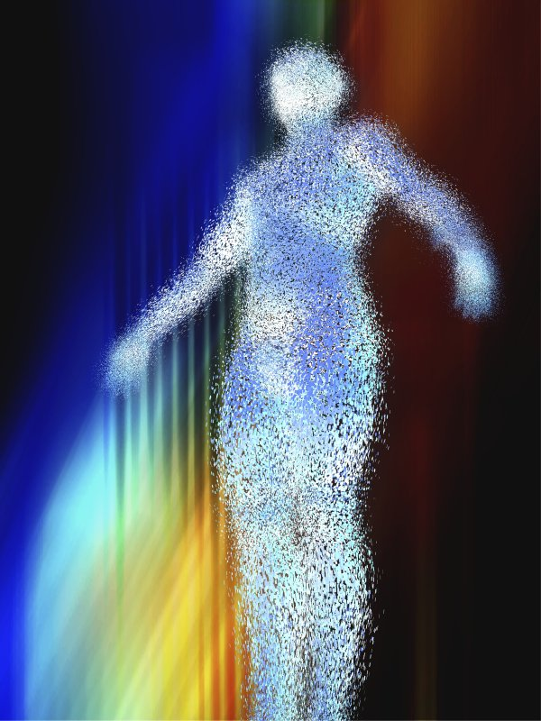
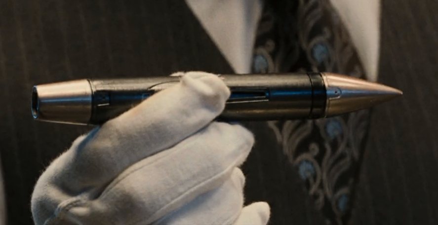
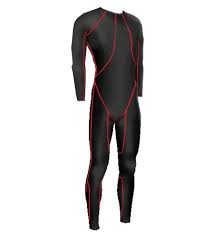

Kovács
Marcell
|
Bemutatkozás
|
Projektmunkák
|
Elérhetőségek
|
|
|
|
Teleporter
|
A teleportálás egy olyan forradalmi technika, mellyel hatalmas távokat
lehet megtenni másodpercek alatt. Az anyagot atomjaira szórja szét a
térben, így az atomokat sokkal kisebb energiával lehet nagy sebességre
gyorsítani közegellenállás hiányában. A teleporter másik oldalán az
atomok összesűrűsödnek és kialakul közöttük a vonzó erő és újra anyagot
alkotnak.
|

|
|
Exnej
(Sidewinder
rakéta)
|

|
Íme a kubai bébik. Olyanok, mint a
Cohibák vagy a Montecristk. Ez egy kinetikusan ölő Sidewinder rakéta.
Másodlagos cyclotrimethylenetrinitramine robbanófejjel. Képes újabb
bunkert
robbantani az alá, amit már felrobbantottál. Ha még okosabb lenne,
akkor már
könyvet írna. Olyan könyvet, amihez képest az Ulysses csak
ákombákom. És aztán
fel is olvasná. Ez az én Eiffel-tornyom, az én IX. szimfóniám, a
Piétám. Minden
részében elegáns, elképesztően gyönyörű. Képes bármilyen álló építmény
élő
lakosságát nullára redukálni. Úgy hívom: "Az Exnej" |
|
VR+
|
|
A Virtuális valóság lehetővé teszi a karantén ideje alatt a
kapcsolattartást. A korábbi eszközök csak kép és hang átvitelére voltak
alkalmasak, ezért fejlesztettem ki a VR+-t. A VR+ egy eszköz, mely
kibővíti a virtuális teret a tapintás érzékelésével. Az eszköz
gyakorlatilag egy teljes öltözék, melyben 1 millió apró masszázs motort
rejtettünk el. A virtuális térben érzékelhető interakciót, így a
testünk teljes felületén érezhetjük.
|

|
|
{kind=link}
{kind=link}
{kind=link}